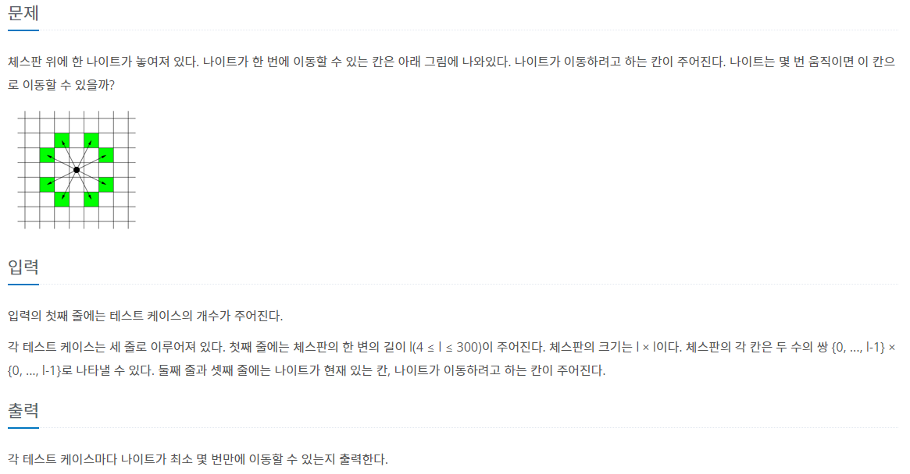
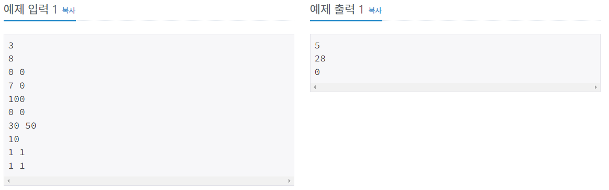
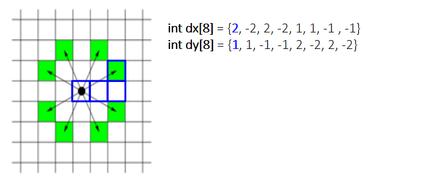
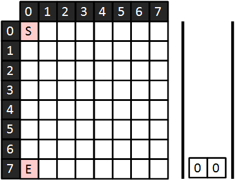
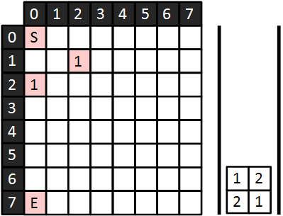
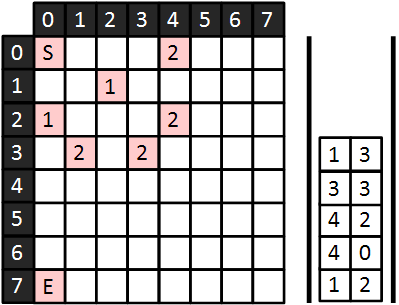

#INFO
난이도 : SIVLER2
문제유형 : BFS
출처 : 7562번: 나이트의 이동 (acmicpc.net)
7562번: 나이트의 이동
체스판 위에 한 나이트가 놓여져 있다. 나이트가 한 번에 이동할 수 있는 칸은 아래 그림에 나와있다. 나이트가 이동하려고 하는 칸이 주어진다. 나이트는 몇 번 움직이면 이 칸으로 이동할 수
www.acmicpc.net
 
#SOLVE
나이트의 이동만 잘 처리해 주면 되는 간단한 BFS 최단 거리 알고리즘 관련 유형 문제 였다. 나이트는 총 8가지 방향으로 이동할 수 있기에 dx, dy 배열을 이용해 나이트의 이동을 표현한다. 예를들어 dx가 2 dy가 1 이라면 x축 방향으로 2만큼 이동 y축 방향으로 1만큼 이동 이라는 뜻이다.

나이트의 이동에 대한 조건만 잘 설정해 주었다면, 나머지는 평범한 BFS 이다. 우선 시작점과 도착점을 입력받고 시작점을 Queue에 넣어준 뒤, 방문체크를 한다.
queue<pair<int,int>> Q;
cin >> x >> y;
Q.push({x, y});
vis[x][y] = 1;
cin >> xx >> yy;
다음으로 큐가 빌 때 까지 아래 과정을 수행한다. 그러면 최종적으로 dist 배열에 최단거리가 저장되게 된다.
while(!Q.empty()) {
auto cur = Q.front(); Q.pop();
for (int dir = 0; dir < 8; dir++) {
int nx = cur.X + dx[dir];
int ny = cur.Y + dy[dir];
if (nx < 0 || nx >= l || ny < 0 || ny >= l) continue;
if (vis[nx][ny]) continue;
Q.push({nx, ny});
vis[nx][ny] = 1;
dist[nx][ny] = dist[cur.X][cur.Y] + 1;
}
}

마지막으로 dist[xx][yy](도착지점의 최단거리)를 출력한다.
cout << dist[xx][yy] << '\n';#CODE
#include <bits/stdc++.h>
using namespace std;
#define X first
#define Y second
int dx[8] = {2, -2, 2, -2, 1, 1, -1, -1};
int dy[8] = {1, 1, -1, -1, 2, -2, 2, -2};
int dist[305][305];
bool vis[305][305];
int main(void) {
ios::sync_with_stdio(0);
cin.tie(0);
int testCase, l;
int x, y, xx, yy;
cin >> testCase;
for(int i = 0; i < testCase; i++) {
// init
cin >> l;
for(int j = 0; j < l; j++) {
fill(dist[j], dist[j] + l, 0);
fill(vis[j], vis[j] + l, 0);
}
// BFS
queue<pair<int,int>> Q;
cin >> x >> y;
Q.push({x, y});
vis[x][y] = 1;
cin >> xx >> yy;
while(!Q.empty()) {
auto cur = Q.front(); Q.pop();
for (int dir = 0; dir < 8; dir++) {
int nx = cur.X + dx[dir];
int ny = cur.Y + dy[dir];
if (nx < 0 || nx >= l || ny < 0 || ny >= l) continue;
if (vis[nx][ny]) continue;
Q.push({nx, ny});
vis[nx][ny] = 1;
dist[nx][ny] = dist[cur.X][cur.Y] + 1;
}
}
cout << dist[xx][yy] << '\n';
}
return 0;
}